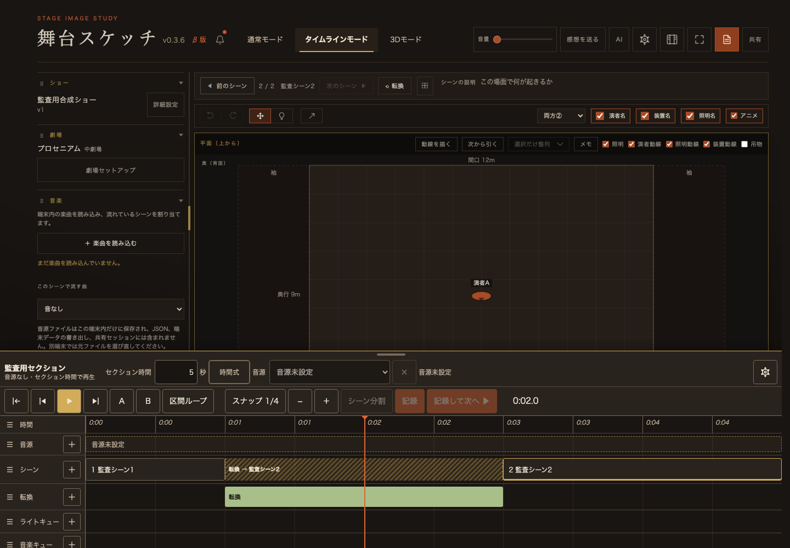
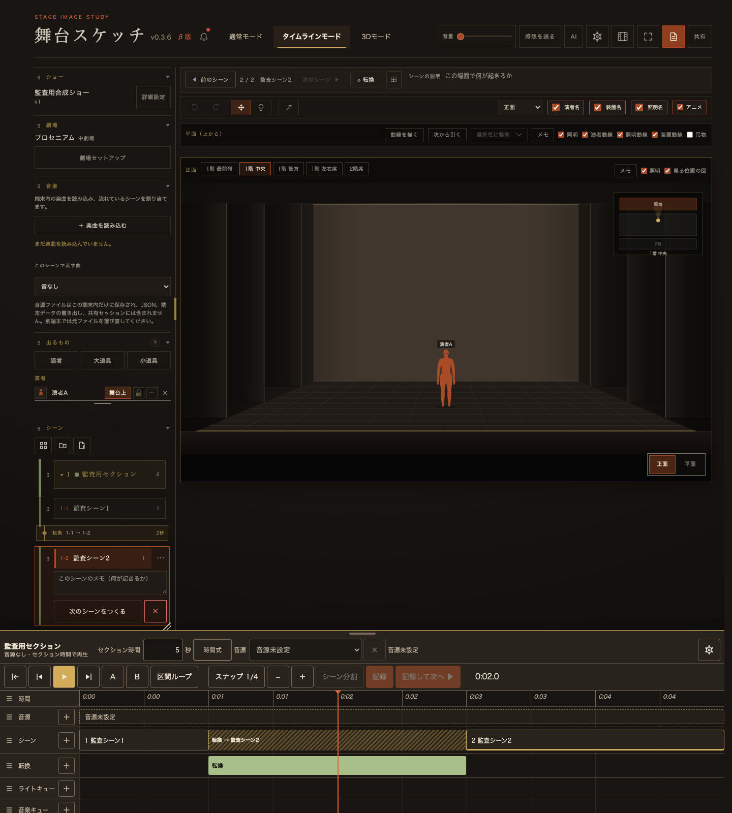

① 再生位置
音源あり：audio.currentTime
音源なし：タイムラインの経過秒
停止・シーク・ループも同じ入口
舞台スケッチ / GitHub Pages / 2026.09.14
タイムラインの位置から、その瞬間の移動中の姿を求める。
GitHub版へ公開済み。Cloudflareベータ版への操作は行っていません。
GitHub版を開く 検証記録アプリ修正 1f7e99a音源あり：audio.currentTime
音源なし：タイムラインの経過秒
停止・シーク・ループも同じ入口
通常シーン：転換の進行率
ミュージックシンク：秒→カウント→姿勢
別の時計を進めずに評価
一時的なanimU / animV等を更新
平面図・正面図へ描画
原本のu / vは変更しない
保存形式・音源の割当ID・通常モードのパネル構成は変更していません。JS参照は472／45、Service Workerキャッシュは467です。


この公開で監査全体の完了とはしません。修正対象は転換の時計とシークです。以下は引き続き切り分けが必要です。